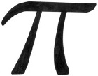

Bir çemberin çapı, çemberin bir tarafından diğerine, ortasından doğrudan geçen mesafedir. Bir çemberin çevresi, çemberin dış kenarı çevresindeki tüm yolun mesafesidir. Çap ile çevre arasındaki ilişki, asla değişmez. Çemberin büyüklüğü önemli olmaksızın – ister poker pulu olsun, ister yeryüzünün ekvatoru olsun fark etmez – çap, çevresinin 3.14’de 1’i civarındadır. Ama 3.14 sadece bir ‘yaklaşıklık’tır. Gerçek sayıya π veya pi denir.

Pi, aşırı derecede kullanışlı bir sayıdır. Bir çemberin bir ucundan bir ucuna mesafeyi veya mesafenin yarısını (yarıçap, r) biliyorsanız, baştanbaşa tüm çevresini ölçmeksizin çevresini belirlemek için pi sayısını kullanabilirsiniz. Aynı zamanda bir çemberin alanını da (alan=πr²) bulmanıza ve çemberleri, küreleri ve yayları içeren çoğu geometrik problemleri çözmenize yardım edebilir. Ama pi, aynı zamanda geometrinin dışında da kullanışlıdır. Werner Heinsenberg’in belirsizlik ilkesine, Albert Einstein’ın genel göreceliliğinin alan denklemine, Charles-Augustin de Coulumb’un elektrik kuvveti yasasına ve fiziğin, istatistiğin ve sayı kuramının birçok diğer alanına eklemlenebilir.
Pi, aynı zamanda büyüleyicidir, çünkü çok basit bir kavram olmasına rağmen hiç kimse kesin bir şekilde onu hesaplayamaz. Pi, bazen 3.14159265..... olarak yazılır, çünkü pi’nin sonu yoktur. Ondalık noktasından sonra gelen sayılar, tekrarlamaksızın sonsuza dek devam edecektir. İki tam sayının oranı olarak ifade edilemeyen bir sayı olan, bir irrasyonel sayı olarak adlandırılır. Antik çağda Babilliler ve Mısırlılar, pi’nin farkındaydılar ve halen yapmakta olduğumuz şeyi kesin olarak yapmaya çalışıp onu belirlemeye çalıştılar. Babilliler, çok da kötü sayılmayacak bir tahminle onu 3.125 olarak, Mısırlılar ise 3.16 olarak hesapladılar. Saniyede 2 trilyon işlem yapabilen bugünkü süper bilgisayarlar, pi’nin ilk 1.241.100.000.000 hanesini tam olarak tespit ettiler.
EK BİLGİLER:
1. Syracuse’lu Arşimed (MÖ 287-212), pi’nin çok kesin bir tahminini elde etmek için kalkülüsün ilk formunu kullandı. 223/71 ile 22/7 arasında olduğunu söyledi. İki limitinin bir ortalaması, yakın bir tahmin olan 3.1418’dir.
2. Alman matematikçi Ludoph van Ceulen (1600 civarı), pi’nin ilk otuz beş hanesini tam olarak hesapladı. O kadar gurur duydu ki mezarına onları kazıttı.
3. Pi-dilbilim, pi’nin hanelerini hatırlaması için belleği güçlendiren araçlar yaratmaya adanmıştır.
4. 2 Temmuz 2005 gününde, doksan beş yaşındaki Japon bir akıl sağlığı danışmanı, pi’nin ilk 83,431 ondalığını başarılı bir şekilde ezberden okudu.